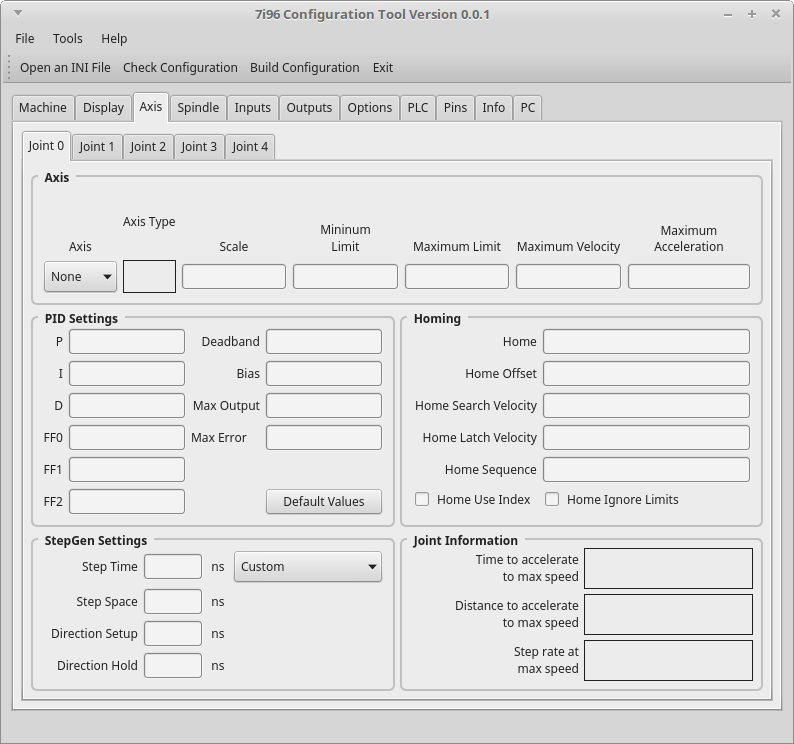

Axis Tab¶
Joint Tabs¶
Configure each joint by starting with joint 0 and don’t skip a joint.
Axis Group¶
Axis Select the axis letter
Scale Enter the the number of step pulses for one linear unit (inch or mm)
Minimum Limit Enter the lower number limit in linear units
Maximum Limit Enter the higher number limit in linear units
Maximum Velocity Enter the maximum velocity in linear units per second
Maximum Acceleration Enter the maximum acceleration rate in linear units per second per second
PID Settings¶
Default Values populates the PID settings with the default values
StepGen Settings¶
Use the drop down list to select a drive or manualy enter the numbers for your drive.
Home Settings¶
Home Location of home for that axis
Home Offset The amount of offset from the home switch
Home Search Velocity The speed in linear units per second to find the home switch
Home Latch Velocity The speed in linear units per second to do the final move to the home switch.
Home Sequence The order of homing, must start with 0 or 1 and not skip a number
Home Use Index If you have an encoder with index you can select this
Home Ignore Limits If you have shared home and limit switches select this
Joint Information¶
Displays information about that joint after you enter in values in the Axis group